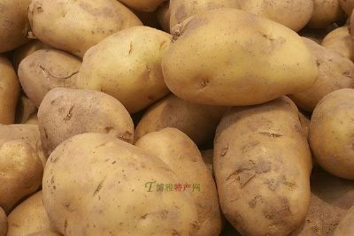
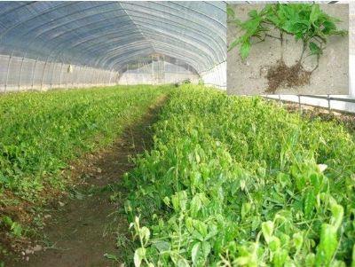
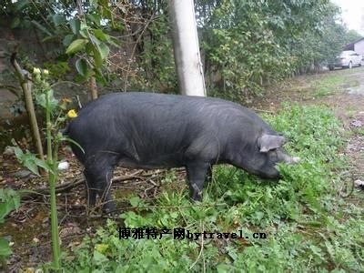
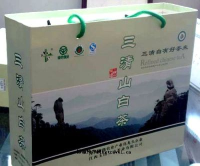
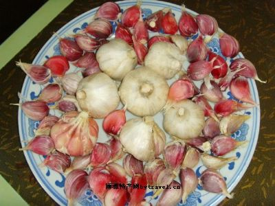
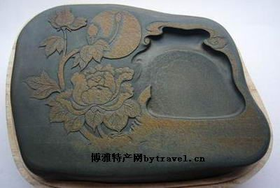
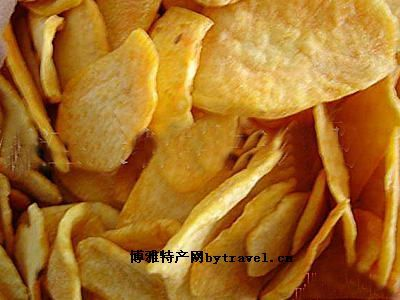
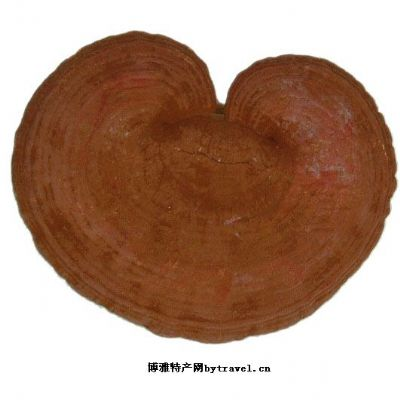
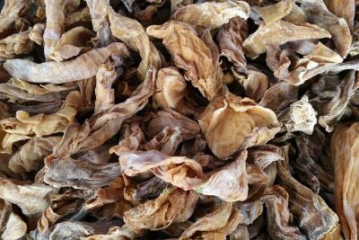

玉山十大特产

类别：油料 产品名称:三清山山茶油 登记证书编号:AGI01113 农业部公告号/时间:第1925号(2013.4.15) 人文历史: 油茶自古即为”皇家贡品”，有2300多年的栽培历史.早在公元前100多年的汉武帝时代就开始栽培油茶，明清时期油茶生产尤为盛行，当时只有皇族贵戚才能一品茶油的风味.野油茶全世界唯中国独有，所以说中国的野油茶就是世界的野油茶，是大自然赋于中国的瑰宝，《山海经》《天工开物》《农政全书》和《本草纲目》等古籍都记载了油茶的营养和药用价值。《随之居饮食谱》更赞为：茶油烹调肴馔，日用适宜，蒸熟食之。油茶整个生长过程无需使用化肥，农业用药，山茶果生长期从开花到成熟，历经冬春，夏，秋之雨露，尽吸天然养分，日月精华，营养价值极高。油酸80-83%，亚油酸8-9%，亚麻酸2-3%。地域范围三清山地处江西东北部的玉山县境内、信江上游，东界浙江开化、常山、江山，南接广丰，西南邻上饶，北毗德兴。三清山山茶油地域保护范围包括南山乡、紫湖镇、怀玉乡、四股桥乡、双明镇、岩瑞镇、下镇镇、仙……[详细]

类别：蔬菜 产品名称：怀玉山马铃薯 登记证书编号：AGI01103 农业部公告号/时间：第1925号(2013.4.15) 人文历史简介 怀玉山马铃薯块茎卵圆形或长圆形，马铃薯皮极为粗糙，较普通马铃薯有明显区别，颜色为黄色，马铃薯肉为白色。营养十分丰富，可称为十全十美的事物。怀玉山马铃薯在玉山境内种植历史悠久，为当地主要农作物。怀玉山马铃薯是当地农民精心选留与自然选择的结果，据考证，怀玉山马铃薯于19世纪末由美国北长老会传教士Dr.Tooker 带到怀玉山，在当年的寺庙种植，在长期的马铃薯种植实践过程中，劳动人民积累了丰富的种植和繁育经验，经过多年的种植，逐步形成了具有高山代表性的马铃薯品种。地域范围怀玉山马铃薯产于江西省玉山县西北60公里处怀玉乡境内，与三清山对峙相望。处于东经117°56′30″-117°58′13″、北纬28°53′01″-28°53′17″之间，平均海拔1000米。农产品地理标志界定为怀玉山范围内的玉峰村、洋塘村、金坪村、陇首村及关口村5个行政村，保护面积124公……[详细]

三叶青又叫蛇附子，葡萄科崖爬藤属，为蔓生藤本植物，全草均可入药，以地下块根和果实的药用效果最好。三叶青每年5月份开花至秋季未结果，花期较长，果实为绿豆般大小，色泽鲜红艳丽，味甘、性凉，具有滋补功效，属极品。三叶青主要用于清热解毒、祛风化痰、活血止痛。治疗小儿高热惊厥、痢疾、支气管炎、肺炎、咽喉炎、肝炎及病毒性脑膜炎；外用治毒蛇咬伤，扁桃体炎，蜂窝织炎，跌打损伤。三叶青的提取制剂对食道癌、胃癌、肺癌、肝癌、肾癌、胰腺癌、胆囊癌、乳腺癌、宫颈癌、白血病、淋巴癌、卵巢癌、膀胱癌、前列腺癌等多种原发癌、转移癌等均具有很好的治疗作用。对肿瘤化疗带来的种种不良反应，如食欲低下、呕吐、恶心、头发脱落以及白细胞减少等都有明显的改善作用。对晚期患者有缓解疼痛作用。它还能有效地提高人体的免疫功能。怀玉山三叶青药材江西玉山县高山特种经济作物种植协会玉山县所辖怀玉乡、樟村镇、横街镇、南山乡、双明镇、紫湖镇及三清乡等7个乡镇。地理坐标为东经117°52′36″～118°25′49″，北纬28°40′17″～28°……[详细]

玉山黑猪是江西省上饶市玉山县的特产。玉山黑猪是江西省玉山县的一个优良地方品种，具有皮薄、肉嫩、味道好、屠宰率较高等特点。在江西省玉山县众多的特色农产品中，黑猪是一颗璀璨明珠。曾以皮薄、骨细、肉质细嫩、风味独特而著称全国。在20世纪五、六十年代，玉山黑猪被指定为特供猪调往北京、庐山等地供中央领导食用。玉山黑猪是国家级畜禽遗传资源保护品种，被联合国粮农组织列入了《世界家养动物多样性信息系统》。玉山黑猪肉嫩多汁、肉鲜味美、香味独特、属脂肉兼用型。最为独特的是它的瘦肉率达到了56%！类别：肉类 产品名称：玉山黑猪 登记证书编号:AGI01106 农业部公告号/时间:第1925号(2013.4.15) 人文历史简介 玉山黑猪体型矮小，全身浑圆，背微凹腹大，四肢粗短，嘴唇短，额前有深皱褶，两耳下披略向前翘，0一般为6-7对。玉山黑猪养殖历史悠久，据产区出土汉墓的陶猪和陶猪圈证实，早在2000年前，当地养猪已有相当水平（《江西畜禽品种志》江西科学技术岀版社）。20世纪六七十年代，玉山黑猪作为特供猪调往……[详细]

玉山黑猪是江西省上饶市玉山县的特产。玉山黑猪是江西省玉山县的一个优良地方品种，具有皮薄、肉嫩、味道好、屠宰率较高等特点。在江西省玉山县众多的特色农产品中，黑猪是一颗璀璨明珠。曾以皮薄、骨细、肉质细嫩、风味独特而著称全国。在20世纪五、六十年代，玉山黑猪被指定为特供猪调往北京、庐山等地供中央领导食用。玉山黑猪是国家级畜禽遗传资源保护品种，被联合国粮农组织列入了《世界家养动物多样性信息系统》。玉山黑猪肉嫩多汁、肉鲜味美、香味独特、属脂肉兼用型。最为独特的是它的瘦肉率达到了56%！类别：肉类 产品名称：玉山黑猪 登记证书编号:AGI01106 农业部公告号/时间:第1925号(2013.4.15) 人文历史简介 玉山黑猪体型矮小，全身浑圆，背微凹腹大，四肢粗短，嘴唇短，额前有深皱褶，两耳下披略向前翘，0一般为6-7对。玉山黑猪养殖历史悠久，据产区出土汉墓的陶猪和陶猪圈证实，早在2000年前，当地养猪已有相当水平（《江西畜禽品种志》江西科学技术岀版社）。20世纪六七十年代，玉山黑猪作为特供猪调往……[详细]

临湖归玉山县管辖，位于上饶县“灵山风景区”东南脚下，是经往“灵山石灵殿”的主要通道，此地具有独特的水质资源和殊有的盘地气候、土质特征。临湖所产大蒜、豆腐、生姜在方圆百来里地享有盛名，临湖大蒜皮红、皮薄、蒜肉晶莹、味香别具、药用价值广泛。临湖周围百姓一直盛传着古时乐平县到石灵殿拜佛的香客赞许临湖的大蒜胜过灵丹妙药的故事。临湖大蒜地域范围临湖大蒜产于江西省玉山县西北30-40公里处临湖镇境内，地处东经117°51′-118°25′、北纬28°30′-28°56′之间，平均海拔410米。农产品地理标志界定为临湖镇范围内的临江湖村、上坂村、院边村、仓坞村、藻溪村、横溪村、杨宅村、坊头村、四甲村、塘西村、叶桥村、岭山村、竹园村、竹岭村、茗坑村等15个行政村，保护面积1260亩，年产量625吨。产品品质特性特征1、外在感官特征：临湖大蒜植株高50-60厘米，茎粗1-1.5厘米，蒜头扁圆形，8—10个瓣，瓣形整齐，外皮呈淡紫红色，肉白色，蒜头重40—50克，性脆、芳香、辛辣味较浓。 2、内在品质指标：……[详细]

三清山多罗纹石，纹理似丝罗，唐大历元年（７６６年）已有开采，制成砚台，名罗纹砚。据清同洁《玉山县志》载：“石之属有体青而带白，纹直而理精者，出沙溪岭，可研。朱子（熹）称为怀玉研。”罗纹砚结构缜密，纹若水波，石面泛着光泽，呵气成汗；将其沉入水中，则湿润如玉。罗纹砚具有发沫细快，久磨无粉杂入墨中、贮水不涸等特点。 玉山有县砚台厂和必姆、临湖乡砚台厂，有县工艺厂，专事生产罗纹砚。生产的品种繁多，造型有方、圆、椭圆形等多种；施艺可分素砚和雕砚两大类。素砚规格有长方砚、方墨海、圆墨海、圆嘴、圆盒和半月形等；素砚价廉物美，是大宗产品，年出口和内销达数十万方；生产的雕砚，被文人墨客视为文房必备之宝，技艺由浮雕、浅雕、阴刻发展到精湛的圆雕，备受国内外行家赞誉。８０年代产量达１０万方以上，除畅销国内市场外，还远销日本、东南亚、欧美各国。……[详细]

熟红薯片色泽浅黄，有韧性，耐咀嚼，自然风味浓厚，甘甜清，香，耐储存，加工简单。 （一）加工设备 案板、不锈钢切刀、缸或大盆、锅（铁锅、铝锅均可），晾晒物（秫秸箔、苇箔或竹帘）、苫盖物（麻袋、被褥、草帘）。 （二）工艺流程 ：选料→漂洗→煮制→浸泡去皮→切片晾晒→捂霜→验质→包装 （三）制作方法 1．选料。选用白皮白瓤、块头大，块形端正，尤虫蛀、硬伤和黑斑，含糖量较高，含淀粉少的红薯。小块红瓤品种不宜使用。 2．漂洗。将选好的薯块倒入大缸或大盆里，用清水洗2～3遍，把泥土洗干净，去掉须根。 3。煮制。将干净红薯块放入锅内，加水。煮到八九成熟时，火势放小，直至煮熟而不煮烂。如煮制过软或煮烂则不易加工。 4．浸泡去皮。将煮好的红薯放在冷水缸或盆里浸泡降温，用手将薯皮全部揭掉，勿损伤红薯肉。5．切片晾晒。先在案板上将煮熟去皮的红薯切成1厘米厚的片。（厚度要均匀，不能薄厚不均）。将切好的熟薯片摆放在秫秸箔、苇箔或竹帘上晾晒，每天翻动2～3次，不能被雨水浇淋，以防发霉变质，也要注意防风沙。直至晾晒到……[详细]

本品生长在三清山高山森林和峭壁之中，灵芝自古称仙草，它对癌症、脑溢血、心脏病有疗效之外，还对胃肠、肚脏、白血病、神经衰弱、慢性支气管炎、哮喘、过敏等疾病有显著的疗效。此外，灵芝还有强精、消炎、镇痛、抗菌、解毒、利尿、净血等多种作用和功效，是一种历史悠久的保健食品和天然的免疫调节剂。食用方法：切片和开水饮用，高度白酒浸泡——灵芝酒。和鸡鸭、猪肚一起炖煮。……[详细]

有机笋干选用三清山竹林中优质野生刚破土的毛竹笋为原料，经清洗、切片、水煮、晒干而成。该笋肉质细嫩，味道爽口，清香纯正，原汁原味，营养丰富，素有“金衣白玉，菜中一绝”、“笋中皇后”之美誉。据测定：冬笋中含有蛋白质、氨基酸、维生素、微量元素，尤其是植物纤维素含量丰富，能促进肠道蠕动，助于消化，预防便秘和结肠癌。冬笋是一种高蛋白、低脂肪、低淀粉食物，对防治肥胖症、高血压、冠心病、糖尿病和动脉硬化等疾病有较好的食疗作用。……[详细]